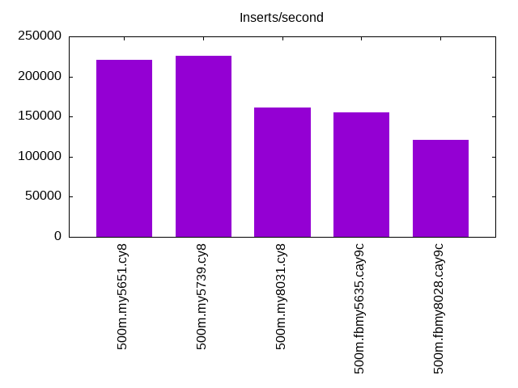
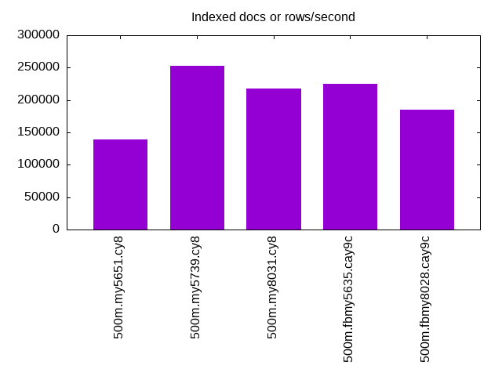
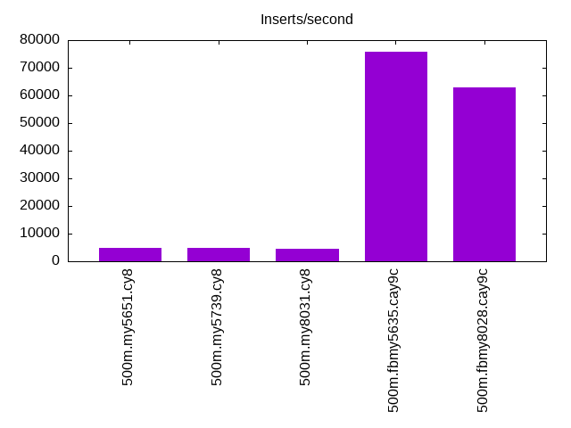
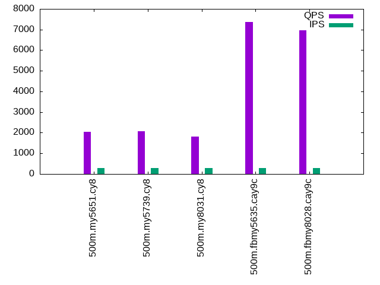
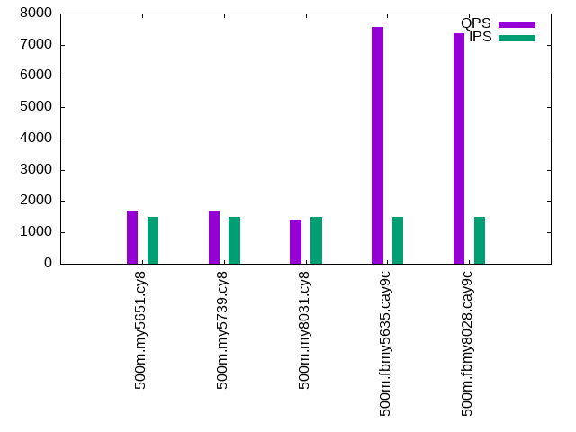
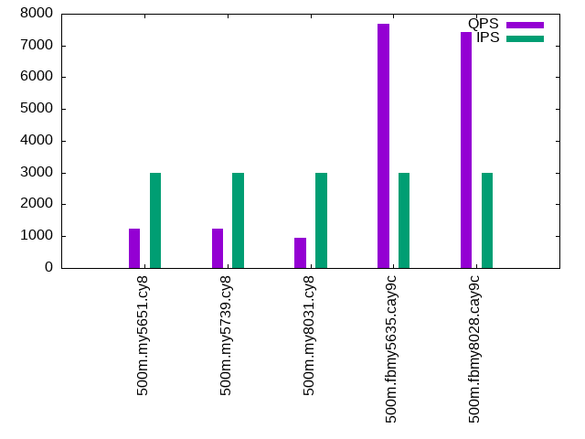

This is a report for the insert benchmark with 500M docs and 3 client(s). It is generated by scripts (bash, awk, sed) and Tufte might not be impressed. An overview of the insert benchmark is here and a short update is here. Below, by DBMS, I mean DBMS+version.config. An example is my8020.c10b40 where my means MySQL, 8020 is version 8.0.20 and c10b40 is the name for the configuration file.
The test server has 8 AMD cores, 16G RAM and an NVMe SSD. It is described here as the Beelink. The benchmark was run with 3 clients and there were 1 or 2 connections per client (1 for queries, 1 for inserts). The benchmark loads 500M rows without secondary indexes, creates secondary indexes, loads another 10M rows then does 3 read+write tests for one hour each that do queries as fast as possible with 100, 500 and then 1000 writes/second/client concurrent with the queries. The database doesn't fit in memory and parts of the benchmark are IO-bound. Clients and the DBMS share one server. The per-database configs are in the per-database subdirectories here.
The tested DBMS are:
The numbers are inserts/s for l.i0 and l.i1, indexed docs (or rows) /s for l.x and queries/s for q*.2. The values are the average rate over the entire test for inserts (IPS) and queries (QPS). The range of values for IPS and QPS is split into 3 parts: bottom 25%, middle 50%, top 25%. Values in the bottom 25% have a red background, values in the top 25% have a green background and values in the middle have no color. A gray background is used for values that can be ignored because the DBMS did not sustain the target insert rate. Red backgrounds are not used when the minimum value is within 80% of the max value.
| dbms | l.i0 | l.x | l.i1 | q100.1 | q500.1 | q1000.1 |
|---|---|---|---|---|---|---|
| 500m.my5651.cy8 | 220653 | 139420 | 4847 | 2040 | 1693 | 1234 |
| 500m.my5739.cy8 | 226244 | 253215 | 4854 | 2062 | 1702 | 1249 |
| 500m.my8031.cy8 | 161186 | 218098 | 4361 | 1801 | 1368 | 959 |
| 500m.fbmy5635.cay9c | 155424 | 225068 | 75758 | 7373 | 7573 | 7676 |
| 500m.fbmy8028.cay9c | 121036 | 185428 | 62893 | 6959 | 7371 | 7425 |
This lists the average rate of inserts/s for the tests that do inserts concurrent with queries. For such tests the query rate is listed in the table above. The read+write tests are setup so that the insert rate should match the target rate every second. Cells that are not at least 95% of the target have a red background to indicate a failure to satisfy the target.
| dbms | q100.1 | q500.1 | q1000.1 |
|---|---|---|---|
| my5651.cy8 | 300 | 1498 | 2995 |
| my5739.cy8 | 300 | 1498 | 2995 |
| my8031.cy8 | 300 | 1498 | 2996 |
| fbmy5635.cay9c | 300 | 1498 | 2995 |
| fbmy8028.cay9c | 300 | 1498 | 2995 |
| target | 300 | 1500 | 3000 |
l.i0: load without secondary indexes. Graphs for performance per 1-second interval are here.
Average throughput:
Insert response time histogram: each cell has the percentage of responses that take <= the time in the header and max is the max response time in seconds. For the max column values in the top 25% of the range have a red background and in the bottom 25% of the range have a green background. The red background is not used when the min value is within 80% of the max value.
| dbms | 256us | 1ms | 4ms | 16ms | 64ms | 256ms | 1s | 4s | 16s | gt | max |
|---|---|---|---|---|---|---|---|---|---|---|---|
| my5651.cy8 | 2.138 | 97.337 | 0.317 | 0.189 | 0.019 | nonzero | nonzero | 1.225 | |||
| my5739.cy8 | 0.016 | 99.761 | 0.189 | 0.022 | 0.010 | 0.002 | 0.484 | ||||
| my8031.cy8 | 99.725 | 0.231 | 0.029 | 0.013 | 0.001 | nonzero | 1.952 | ||||
| fbmy5635.cay9c | 99.965 | 0.019 | 0.004 | 0.009 | 0.003 | 0.631 | |||||
| fbmy8028.cay9c | 99.766 | 0.204 | 0.014 | 0.013 | 0.003 | 0.628 |
Performance metrics for the DBMS listed above. Some are normalized by throughput, others are not. Legend for results is here.
ips qps rps rmbps wps wmbps rpq rkbpq wpi wkbpi csps cpups cspq cpupq dbgb1 dbgb2 rss maxop p50 p99 tag 220653 0 1835 7.2 919.1 71.0 0.008 0.033 0.004 0.329 26771 57.6 0.121 21 32.9 73.4 10.7 1.225 76843 39058 500m.my5651.cy8 226244 0 0 0.0 997.9 74.3 0.000 0.000 0.004 0.336 25515 61.0 0.113 22 32.9 73.4 10.9 0.484 76843 51331 500m.my5739.cy8 161186 0 0 0.0 1049.9 61.2 0.000 0.000 0.007 0.389 19099 58.8 0.118 29 32.8 35.2 11.1 1.952 54641 44641 500m.my8031.cy8 155424 0 1 0.1 315.6 70.3 0.000 0.001 0.002 0.463 17606 64.6 0.113 33 15.7 16.1 4.6 0.631 52161 34661 500m.fbmy5635.cay9c 121036 0 1 0.2 236.1 51.4 0.000 0.001 0.002 0.435 13766 60.0 0.114 40 15.7 16.3 4.6 0.628 40570 29168 500m.fbmy8028.cay9c
l.x: create secondary indexes.
Average throughput:
Performance metrics for the DBMS listed above. Some are normalized by throughput, others are not. Legend for results is here.
ips qps rps rmbps wps wmbps rpq rkbpq wpi wkbpi csps cpups cspq cpupq dbgb1 dbgb2 rss maxop p50 p99 tag 139420 0 1280 106.9 4119.2 201.1 0.009 0.785 0.030 1.477 14699 26.6 0.105 15 67.8 108.3 10.5 0.021 NA NA 500m.my5651.cy8 253215 0 1687 194.7 3192.1 257.5 0.007 0.787 0.013 1.041 14318 27.3 0.057 9 73.6 114.1 10.3 0.005 NA NA 500m.my5739.cy8 218098 0 3300 270.6 4303.1 264.6 0.015 1.270 0.020 1.242 14732 61.0 0.068 22 73.3 75.8 10.4 0.009 NA NA 500m.my8031.cy8 225068 0 291 49.0 154.7 33.7 0.001 0.223 0.001 0.153 1338 36.2 0.006 13 33.3 33.7 6.5 0.003 NA NA 500m.fbmy5635.cay9c 185428 0 242 40.9 125.1 27.7 0.001 0.226 0.001 0.153 1310 36.8 0.007 16 33.3 33.9 8.4 0.005 NA NA 500m.fbmy8028.cay9c
l.i1: continue load after secondary indexes created. Graphs for performance per 1-second interval are here.
Average throughput:
Insert response time histogram: each cell has the percentage of responses that take <= the time in the header and max is the max response time in seconds. For the max column values in the top 25% of the range have a red background and in the bottom 25% of the range have a green background. The red background is not used when the min value is within 80% of the max value.
| dbms | 256us | 1ms | 4ms | 16ms | 64ms | 256ms | 1s | 4s | 16s | gt | max |
|---|---|---|---|---|---|---|---|---|---|---|---|
| my5651.cy8 | 22.214 | 56.278 | 12.505 | 6.264 | 2.540 | 0.199 | 3.493 | ||||
| my5739.cy8 | 1.755 | 77.679 | 11.066 | 6.568 | 2.772 | 0.160 | 1.935 | ||||
| my8031.cy8 | 0.038 | 73.576 | 12.911 | 10.884 | 2.578 | 0.012 | 1.849 | ||||
| fbmy5635.cay9c | 99.902 | 0.082 | 0.011 | 0.004 | 0.183 | ||||||
| fbmy8028.cay9c | 99.752 | 0.214 | 0.023 | 0.010 | nonzero | 0.256 |
Performance metrics for the DBMS listed above. Some are normalized by throughput, others are not. Legend for results is here.
ips qps rps rmbps wps wmbps rpq rkbpq wpi wkbpi csps cpups cspq cpupq dbgb1 dbgb2 rss maxop p50 p99 tag 4847 0 2868 43.9 4273.9 142.5 0.592 9.264 0.882 30.096 15497 9.6 3.197 158 105.4 149.4 10.5 3.493 350 0 500m.my5651.cy8 4854 0 2798 43.7 4066.8 138.4 0.576 9.221 0.838 29.203 14964 13.7 3.083 226 105.4 149.3 10.7 1.935 350 50 500m.my5739.cy8 4361 0 2554 39.9 5064.5 148.3 0.586 9.371 1.161 34.831 20515 15.7 4.704 288 105.0 110.7 10.7 1.849 350 50 500m.my8031.cy8 75758 0 1 0.1 289.0 64.7 0.000 0.001 0.004 0.874 17048 59.9 0.225 63 34.7 36.4 6.6 0.183 25682 1049 500m.fbmy5635.cay9c 62893 0 4 0.4 242.0 53.4 0.000 0.007 0.004 0.869 14644 58.1 0.233 74 34.5 36.4 7.0 0.256 21576 15063 500m.fbmy8028.cay9c
q100.1: range queries with 100 insert/s per client. Graphs for performance per 1-second interval are here.
Average throughput:
Query response time histogram: each cell has the percentage of responses that take <= the time in the header and max is the max response time in seconds. For max values in the top 25% of the range have a red background and in the bottom 25% of the range have a green background. The red background is not used when the min value is within 80% of the max value.
| dbms | 256us | 1ms | 4ms | 16ms | 64ms | 256ms | 1s | 4s | 16s | gt | max |
|---|---|---|---|---|---|---|---|---|---|---|---|
| my5651.cy8 | 29.263 | 16.655 | 51.961 | 1.130 | 0.947 | 0.044 | 0.167 | ||||
| my5739.cy8 | 9.809 | 35.553 | 52.946 | 0.689 | 0.953 | 0.051 | 0.222 | ||||
| my8031.cy8 | 4.625 | 38.387 | 53.880 | 1.844 | 1.260 | 0.005 | 0.143 | ||||
| fbmy5635.cay9c | 4.710 | 95.272 | 0.013 | 0.005 | nonzero | nonzero | 0.071 | ||||
| fbmy8028.cay9c | 0.401 | 99.580 | 0.014 | 0.004 | nonzero | 0.057 |
Insert response time histogram: each cell has the percentage of responses that take <= the time in the header and max is the max response time in seconds. For max values in the top 25% of the range have a red background and in the bottom 25% of the range have a green background. The red background is not used when the min value is within 80% of the max value.
| dbms | 256us | 1ms | 4ms | 16ms | 64ms | 256ms | 1s | 4s | 16s | gt | max |
|---|---|---|---|---|---|---|---|---|---|---|---|
| my5651.cy8 | 1.037 | 69.106 | 23.681 | 6.176 | 0.253 | ||||||
| my5739.cy8 | 0.005 | 79.560 | 13.731 | 6.653 | 0.051 | 0.339 | |||||
| my8031.cy8 | 0.023 | 82.102 | 16.718 | 1.157 | 0.144 | ||||||
| fbmy5635.cay9c | 99.898 | 0.097 | 0.005 | 0.018 | |||||||
| fbmy8028.cay9c | 99.931 | 0.069 | 0.009 |
Performance metrics for the DBMS listed above. Some are normalized by throughput, others are not. Legend for results is here.
ips qps rps rmbps wps wmbps rpq rkbpq wpi wkbpi csps cpups cspq cpupq dbgb1 dbgb2 rss maxop p50 p99 tag 300 2040 10505 164.1 1246.2 36.8 5.149 82.345 4.161 125.848 30756 10.5 15.074 412 105.4 149.4 10.5 0.167 751 32 500m.my5651.cy8 300 2062 10620 165.9 1271.4 37.4 5.151 82.412 4.245 127.883 31227 12.1 15.145 469 105.4 149.4 10.7 0.222 767 64 500m.my5739.cy8 300 1801 9260 144.7 1478.3 37.4 5.142 82.279 4.936 127.850 29141 13.0 16.183 578 105.0 110.8 10.7 0.143 687 48 500m.my8031.cy8 300 7373 172 1.4 8.9 0.9 0.023 0.196 0.030 3.082 29008 37.6 3.934 408 34.6 36.5 7.7 0.071 2445 1886 500m.fbmy5635.cay9c 300 6959 172 1.4 5.1 0.5 0.025 0.206 0.017 1.667 27518 38.2 3.954 439 34.6 36.6 7.5 0.057 2319 1710 500m.fbmy8028.cay9c
q500.1: range queries with 500 insert/s per client. Graphs for performance per 1-second interval are here.
Average throughput:
Query response time histogram: each cell has the percentage of responses that take <= the time in the header and max is the max response time in seconds. For max values in the top 25% of the range have a red background and in the bottom 25% of the range have a green background. The red background is not used when the min value is within 80% of the max value.
| dbms | 256us | 1ms | 4ms | 16ms | 64ms | 256ms | 1s | 4s | 16s | gt | max |
|---|---|---|---|---|---|---|---|---|---|---|---|
| my5651.cy8 | 27.919 | 16.711 | 51.532 | 2.018 | 1.745 | 0.074 | 0.194 | ||||
| my5739.cy8 | 10.301 | 33.530 | 53.376 | 0.988 | 1.687 | 0.118 | nonzero | 0.263 | |||
| my8031.cy8 | 4.458 | 37.264 | 52.140 | 3.294 | 2.830 | 0.013 | 0.148 | ||||
| fbmy5635.cay9c | 6.145 | 93.835 | 0.019 | 0.002 | 0.012 | ||||||
| fbmy8028.cay9c | 0.567 | 99.405 | 0.026 | 0.002 | nonzero | 0.016 |
Insert response time histogram: each cell has the percentage of responses that take <= the time in the header and max is the max response time in seconds. For max values in the top 25% of the range have a red background and in the bottom 25% of the range have a green background. The red background is not used when the min value is within 80% of the max value.
| dbms | 256us | 1ms | 4ms | 16ms | 64ms | 256ms | 1s | 4s | 16s | gt | max |
|---|---|---|---|---|---|---|---|---|---|---|---|
| my5651.cy8 | 19.562 | 58.320 | 21.016 | 1.102 | 0.168 | ||||||
| my5739.cy8 | 17.474 | 72.948 | 8.946 | 0.631 | 0.199 | ||||||
| my8031.cy8 | 0.398 | 91.386 | 8.076 | 0.140 | 0.156 | ||||||
| fbmy5635.cay9c | 98.760 | 1.238 | 0.002 | 0.019 | |||||||
| fbmy8028.cay9c | 96.515 | 3.479 | 0.006 | 0.019 |
Performance metrics for the DBMS listed above. Some are normalized by throughput, others are not. Legend for results is here.
ips qps rps rmbps wps wmbps rpq rkbpq wpi wkbpi csps cpups cspq cpupq dbgb1 dbgb2 rss maxop p50 p99 tag 1498 1693 8745 136.4 1865.7 55.3 5.165 82.458 1.246 37.826 27551 10.6 16.271 501 105.8 149.8 10.5 0.194 607 48 500m.my5651.cy8 1498 1702 8772 137.1 1887.5 55.6 5.154 82.467 1.260 37.983 27771 12.2 16.317 573 105.8 149.7 10.7 0.263 591 128 500m.my5739.cy8 1498 1368 7059 110.3 2299.9 58.5 5.161 82.582 1.535 39.961 25641 13.0 18.748 760 105.4 111.2 10.7 0.148 479 48 500m.my8031.cy8 1498 7573 3 0.3 16.4 2.8 0.000 0.042 0.011 1.904 29521 39.2 3.898 414 35.3 35.8 10.5 0.012 2510 2206 500m.fbmy5635.cay9c 1498 7371 1 0.1 12.2 2.3 0.000 0.018 0.008 1.542 28832 39.9 3.912 433 35.3 36.0 10.5 0.016 2429 2014 500m.fbmy8028.cay9c
q1000.1: range queries with 1000 insert/s per client. Graphs for performance per 1-second interval are here.
Average throughput:
Query response time histogram: each cell has the percentage of responses that take <= the time in the header and max is the max response time in seconds. For max values in the top 25% of the range have a red background and in the bottom 25% of the range have a green background. The red background is not used when the min value is within 80% of the max value.
| dbms | 256us | 1ms | 4ms | 16ms | 64ms | 256ms | 1s | 4s | 16s | gt | max |
|---|---|---|---|---|---|---|---|---|---|---|---|
| my5651.cy8 | 25.549 | 16.588 | 51.490 | 2.769 | 3.418 | 0.186 | nonzero | 0.261 | |||
| my5739.cy8 | 10.244 | 31.389 | 53.589 | 1.308 | 3.189 | 0.281 | nonzero | 0.275 | |||
| my8031.cy8 | 3.932 | 35.872 | 48.293 | 6.628 | 5.246 | 0.029 | 0.145 | ||||
| fbmy5635.cay9c | 6.467 | 93.488 | 0.044 | 0.002 | nonzero | 0.027 | |||||
| fbmy8028.cay9c | 0.465 | 99.481 | 0.053 | 0.001 | nonzero | 0.017 |
Insert response time histogram: each cell has the percentage of responses that take <= the time in the header and max is the max response time in seconds. For max values in the top 25% of the range have a red background and in the bottom 25% of the range have a green background. The red background is not used when the min value is within 80% of the max value.
| dbms | 256us | 1ms | 4ms | 16ms | 64ms | 256ms | 1s | 4s | 16s | gt | max |
|---|---|---|---|---|---|---|---|---|---|---|---|
| my5651.cy8 | 19.226 | 57.026 | 22.276 | 1.471 | 0.001 | 0.309 | |||||
| my5739.cy8 | 5.570 | 80.263 | 13.367 | 0.800 | 0.222 | ||||||
| my8031.cy8 | 0.006 | 89.467 | 10.370 | 0.157 | 0.148 | ||||||
| fbmy5635.cay9c | 97.701 | 2.296 | 0.003 | 0.025 | |||||||
| fbmy8028.cay9c | 95.612 | 4.384 | 0.004 | 0.020 |
Performance metrics for the DBMS listed above. Some are normalized by throughput, others are not. Legend for results is here.
ips qps rps rmbps wps wmbps rpq rkbpq wpi wkbpi csps cpups cspq cpupq dbgb1 dbgb2 rss maxop p50 p99 tag 2995 1234 6707 104.2 2551.7 76.2 5.434 86.456 0.852 26.069 23289 11.6 18.867 752 106.5 150.5 10.5 0.261 448 32 500m.my5651.cy8 2995 1249 6750 105.5 2592.0 77.0 5.406 86.496 0.865 26.331 23584 13.4 18.889 859 106.5 150.4 10.7 0.275 448 16 500m.my5739.cy8 2996 959 5231 81.7 3240.8 83.2 5.453 87.251 1.082 28.435 23083 14.8 24.063 1234 106.1 111.9 10.7 0.145 336 48 500m.my8031.cy8 2995 7676 5 0.6 32.1 6.2 0.001 0.075 0.011 2.127 29944 41.0 3.901 427 36.2 38.1 10.5 0.027 2557 2254 500m.fbmy5635.cay9c 2995 7425 2 0.2 23.8 4.7 0.000 0.032 0.008 1.622 29015 41.6 3.908 448 36.1 38.2 10.6 0.017 2493 2046 500m.fbmy8028.cay9c
l.i0: load without secondary indexes
Performance metrics for all DBMS, not just the ones listed above. Some are normalized by throughput, others are not. Legend for results is here.
ips qps rps rmbps wps wmbps rpq rkbpq wpi wkbpi csps cpups cspq cpupq dbgb1 dbgb2 rss maxop p50 p99 tag 220653 0 1835 7.2 919.1 71.0 0.008 0.033 0.004 0.329 26771 57.6 0.121 21 32.9 73.4 10.7 1.225 76843 39058 500m.my5651.cy8 226244 0 0 0.0 997.9 74.3 0.000 0.000 0.004 0.336 25515 61.0 0.113 22 32.9 73.4 10.9 0.484 76843 51331 500m.my5739.cy8 161186 0 0 0.0 1049.9 61.2 0.000 0.000 0.007 0.389 19099 58.8 0.118 29 32.8 35.2 11.1 1.952 54641 44641 500m.my8031.cy8 155424 0 1 0.1 315.6 70.3 0.000 0.001 0.002 0.463 17606 64.6 0.113 33 15.7 16.1 4.6 0.631 52161 34661 500m.fbmy5635.cay9c 121036 0 1 0.2 236.1 51.4 0.000 0.001 0.002 0.435 13766 60.0 0.114 40 15.7 16.3 4.6 0.628 40570 29168 500m.fbmy8028.cay9c
l.x: create secondary indexes
Performance metrics for all DBMS, not just the ones listed above. Some are normalized by throughput, others are not. Legend for results is here.
ips qps rps rmbps wps wmbps rpq rkbpq wpi wkbpi csps cpups cspq cpupq dbgb1 dbgb2 rss maxop p50 p99 tag 139420 0 1280 106.9 4119.2 201.1 0.009 0.785 0.030 1.477 14699 26.6 0.105 15 67.8 108.3 10.5 0.021 NA NA 500m.my5651.cy8 253215 0 1687 194.7 3192.1 257.5 0.007 0.787 0.013 1.041 14318 27.3 0.057 9 73.6 114.1 10.3 0.005 NA NA 500m.my5739.cy8 218098 0 3300 270.6 4303.1 264.6 0.015 1.270 0.020 1.242 14732 61.0 0.068 22 73.3 75.8 10.4 0.009 NA NA 500m.my8031.cy8 225068 0 291 49.0 154.7 33.7 0.001 0.223 0.001 0.153 1338 36.2 0.006 13 33.3 33.7 6.5 0.003 NA NA 500m.fbmy5635.cay9c 185428 0 242 40.9 125.1 27.7 0.001 0.226 0.001 0.153 1310 36.8 0.007 16 33.3 33.9 8.4 0.005 NA NA 500m.fbmy8028.cay9c
l.i1: continue load after secondary indexes created
Performance metrics for all DBMS, not just the ones listed above. Some are normalized by throughput, others are not. Legend for results is here.
ips qps rps rmbps wps wmbps rpq rkbpq wpi wkbpi csps cpups cspq cpupq dbgb1 dbgb2 rss maxop p50 p99 tag 4847 0 2868 43.9 4273.9 142.5 0.592 9.264 0.882 30.096 15497 9.6 3.197 158 105.4 149.4 10.5 3.493 350 0 500m.my5651.cy8 4854 0 2798 43.7 4066.8 138.4 0.576 9.221 0.838 29.203 14964 13.7 3.083 226 105.4 149.3 10.7 1.935 350 50 500m.my5739.cy8 4361 0 2554 39.9 5064.5 148.3 0.586 9.371 1.161 34.831 20515 15.7 4.704 288 105.0 110.7 10.7 1.849 350 50 500m.my8031.cy8 75758 0 1 0.1 289.0 64.7 0.000 0.001 0.004 0.874 17048 59.9 0.225 63 34.7 36.4 6.6 0.183 25682 1049 500m.fbmy5635.cay9c 62893 0 4 0.4 242.0 53.4 0.000 0.007 0.004 0.869 14644 58.1 0.233 74 34.5 36.4 7.0 0.256 21576 15063 500m.fbmy8028.cay9c
q100.1: range queries with 100 insert/s per client
Performance metrics for all DBMS, not just the ones listed above. Some are normalized by throughput, others are not. Legend for results is here.
ips qps rps rmbps wps wmbps rpq rkbpq wpi wkbpi csps cpups cspq cpupq dbgb1 dbgb2 rss maxop p50 p99 tag 300 2040 10505 164.1 1246.2 36.8 5.149 82.345 4.161 125.848 30756 10.5 15.074 412 105.4 149.4 10.5 0.167 751 32 500m.my5651.cy8 300 2062 10620 165.9 1271.4 37.4 5.151 82.412 4.245 127.883 31227 12.1 15.145 469 105.4 149.4 10.7 0.222 767 64 500m.my5739.cy8 300 1801 9260 144.7 1478.3 37.4 5.142 82.279 4.936 127.850 29141 13.0 16.183 578 105.0 110.8 10.7 0.143 687 48 500m.my8031.cy8 300 7373 172 1.4 8.9 0.9 0.023 0.196 0.030 3.082 29008 37.6 3.934 408 34.6 36.5 7.7 0.071 2445 1886 500m.fbmy5635.cay9c 300 6959 172 1.4 5.1 0.5 0.025 0.206 0.017 1.667 27518 38.2 3.954 439 34.6 36.6 7.5 0.057 2319 1710 500m.fbmy8028.cay9c
q500.1: range queries with 500 insert/s per client
Performance metrics for all DBMS, not just the ones listed above. Some are normalized by throughput, others are not. Legend for results is here.
ips qps rps rmbps wps wmbps rpq rkbpq wpi wkbpi csps cpups cspq cpupq dbgb1 dbgb2 rss maxop p50 p99 tag 1498 1693 8745 136.4 1865.7 55.3 5.165 82.458 1.246 37.826 27551 10.6 16.271 501 105.8 149.8 10.5 0.194 607 48 500m.my5651.cy8 1498 1702 8772 137.1 1887.5 55.6 5.154 82.467 1.260 37.983 27771 12.2 16.317 573 105.8 149.7 10.7 0.263 591 128 500m.my5739.cy8 1498 1368 7059 110.3 2299.9 58.5 5.161 82.582 1.535 39.961 25641 13.0 18.748 760 105.4 111.2 10.7 0.148 479 48 500m.my8031.cy8 1498 7573 3 0.3 16.4 2.8 0.000 0.042 0.011 1.904 29521 39.2 3.898 414 35.3 35.8 10.5 0.012 2510 2206 500m.fbmy5635.cay9c 1498 7371 1 0.1 12.2 2.3 0.000 0.018 0.008 1.542 28832 39.9 3.912 433 35.3 36.0 10.5 0.016 2429 2014 500m.fbmy8028.cay9c
q1000.1: range queries with 1000 insert/s per client
Performance metrics for all DBMS, not just the ones listed above. Some are normalized by throughput, others are not. Legend for results is here.
ips qps rps rmbps wps wmbps rpq rkbpq wpi wkbpi csps cpups cspq cpupq dbgb1 dbgb2 rss maxop p50 p99 tag 2995 1234 6707 104.2 2551.7 76.2 5.434 86.456 0.852 26.069 23289 11.6 18.867 752 106.5 150.5 10.5 0.261 448 32 500m.my5651.cy8 2995 1249 6750 105.5 2592.0 77.0 5.406 86.496 0.865 26.331 23584 13.4 18.889 859 106.5 150.4 10.7 0.275 448 16 500m.my5739.cy8 2996 959 5231 81.7 3240.8 83.2 5.453 87.251 1.082 28.435 23083 14.8 24.063 1234 106.1 111.9 10.7 0.145 336 48 500m.my8031.cy8 2995 7676 5 0.6 32.1 6.2 0.001 0.075 0.011 2.127 29944 41.0 3.901 427 36.2 38.1 10.5 0.027 2557 2254 500m.fbmy5635.cay9c 2995 7425 2 0.2 23.8 4.7 0.000 0.032 0.008 1.622 29015 41.6 3.908 448 36.1 38.2 10.6 0.017 2493 2046 500m.fbmy8028.cay9c
Insert response time histogram
256us 1ms 4ms 16ms 64ms 256ms 1s 4s 16s gt max tag 0.000 2.138 97.337 0.317 0.189 0.019 nonzero nonzero 0.000 0.000 1.225 my5651.cy8 0.000 0.016 99.761 0.189 0.022 0.010 0.002 0.000 0.000 0.000 0.484 my5739.cy8 0.000 0.000 99.725 0.231 0.029 0.013 0.001 nonzero 0.000 0.000 1.952 my8031.cy8 0.000 0.000 99.965 0.019 0.004 0.009 0.003 0.000 0.000 0.000 0.631 fbmy5635.cay9c 0.000 0.000 99.766 0.204 0.014 0.013 0.003 0.000 0.000 0.000 0.628 fbmy8028.cay9c
TODO - determine whether there is data for create index response time
Insert response time histogram
256us 1ms 4ms 16ms 64ms 256ms 1s 4s 16s gt max tag 0.000 0.000 22.214 56.278 12.505 6.264 2.540 0.199 0.000 0.000 3.493 my5651.cy8 0.000 0.000 1.755 77.679 11.066 6.568 2.772 0.160 0.000 0.000 1.935 my5739.cy8 0.000 0.000 0.038 73.576 12.911 10.884 2.578 0.012 0.000 0.000 1.849 my8031.cy8 0.000 0.000 99.902 0.082 0.011 0.004 0.000 0.000 0.000 0.000 0.183 fbmy5635.cay9c 0.000 0.000 99.752 0.214 0.023 0.010 nonzero 0.000 0.000 0.000 0.256 fbmy8028.cay9c
Query response time histogram
256us 1ms 4ms 16ms 64ms 256ms 1s 4s 16s gt max tag 29.263 16.655 51.961 1.130 0.947 0.044 0.000 0.000 0.000 0.000 0.167 my5651.cy8 9.809 35.553 52.946 0.689 0.953 0.051 0.000 0.000 0.000 0.000 0.222 my5739.cy8 4.625 38.387 53.880 1.844 1.260 0.005 0.000 0.000 0.000 0.000 0.143 my8031.cy8 4.710 95.272 0.013 0.005 nonzero nonzero 0.000 0.000 0.000 0.000 0.071 fbmy5635.cay9c 0.401 99.580 0.014 0.004 nonzero 0.000 0.000 0.000 0.000 0.000 0.057 fbmy8028.cay9c
Insert response time histogram
256us 1ms 4ms 16ms 64ms 256ms 1s 4s 16s gt max tag 0.000 0.000 1.037 69.106 23.681 6.176 0.000 0.000 0.000 0.000 0.253 my5651.cy8 0.000 0.000 0.005 79.560 13.731 6.653 0.051 0.000 0.000 0.000 0.339 my5739.cy8 0.000 0.000 0.023 82.102 16.718 1.157 0.000 0.000 0.000 0.000 0.144 my8031.cy8 0.000 0.000 99.898 0.097 0.005 0.000 0.000 0.000 0.000 0.000 0.018 fbmy5635.cay9c 0.000 0.000 99.931 0.069 0.000 0.000 0.000 0.000 0.000 0.000 0.009 fbmy8028.cay9c
Query response time histogram
256us 1ms 4ms 16ms 64ms 256ms 1s 4s 16s gt max tag 27.919 16.711 51.532 2.018 1.745 0.074 0.000 0.000 0.000 0.000 0.194 my5651.cy8 10.301 33.530 53.376 0.988 1.687 0.118 nonzero 0.000 0.000 0.000 0.263 my5739.cy8 4.458 37.264 52.140 3.294 2.830 0.013 0.000 0.000 0.000 0.000 0.148 my8031.cy8 6.145 93.835 0.019 0.002 0.000 0.000 0.000 0.000 0.000 0.000 0.012 fbmy5635.cay9c 0.567 99.405 0.026 0.002 nonzero 0.000 0.000 0.000 0.000 0.000 0.016 fbmy8028.cay9c
Insert response time histogram
256us 1ms 4ms 16ms 64ms 256ms 1s 4s 16s gt max tag 0.000 0.000 19.562 58.320 21.016 1.102 0.000 0.000 0.000 0.000 0.168 my5651.cy8 0.000 0.000 17.474 72.948 8.946 0.631 0.000 0.000 0.000 0.000 0.199 my5739.cy8 0.000 0.000 0.398 91.386 8.076 0.140 0.000 0.000 0.000 0.000 0.156 my8031.cy8 0.000 0.000 98.760 1.238 0.002 0.000 0.000 0.000 0.000 0.000 0.019 fbmy5635.cay9c 0.000 0.000 96.515 3.479 0.006 0.000 0.000 0.000 0.000 0.000 0.019 fbmy8028.cay9c
Query response time histogram
256us 1ms 4ms 16ms 64ms 256ms 1s 4s 16s gt max tag 25.549 16.588 51.490 2.769 3.418 0.186 nonzero 0.000 0.000 0.000 0.261 my5651.cy8 10.244 31.389 53.589 1.308 3.189 0.281 nonzero 0.000 0.000 0.000 0.275 my5739.cy8 3.932 35.872 48.293 6.628 5.246 0.029 0.000 0.000 0.000 0.000 0.145 my8031.cy8 6.467 93.488 0.044 0.002 nonzero 0.000 0.000 0.000 0.000 0.000 0.027 fbmy5635.cay9c 0.465 99.481 0.053 0.001 nonzero 0.000 0.000 0.000 0.000 0.000 0.017 fbmy8028.cay9c
Insert response time histogram
256us 1ms 4ms 16ms 64ms 256ms 1s 4s 16s gt max tag 0.000 0.000 19.226 57.026 22.276 1.471 0.001 0.000 0.000 0.000 0.309 my5651.cy8 0.000 0.000 5.570 80.263 13.367 0.800 0.000 0.000 0.000 0.000 0.222 my5739.cy8 0.000 0.000 0.006 89.467 10.370 0.157 0.000 0.000 0.000 0.000 0.148 my8031.cy8 0.000 0.000 97.701 2.296 0.003 0.000 0.000 0.000 0.000 0.000 0.025 fbmy5635.cay9c 0.000 0.000 95.612 4.384 0.004 0.000 0.000 0.000 0.000 0.000 0.020 fbmy8028.cay9c